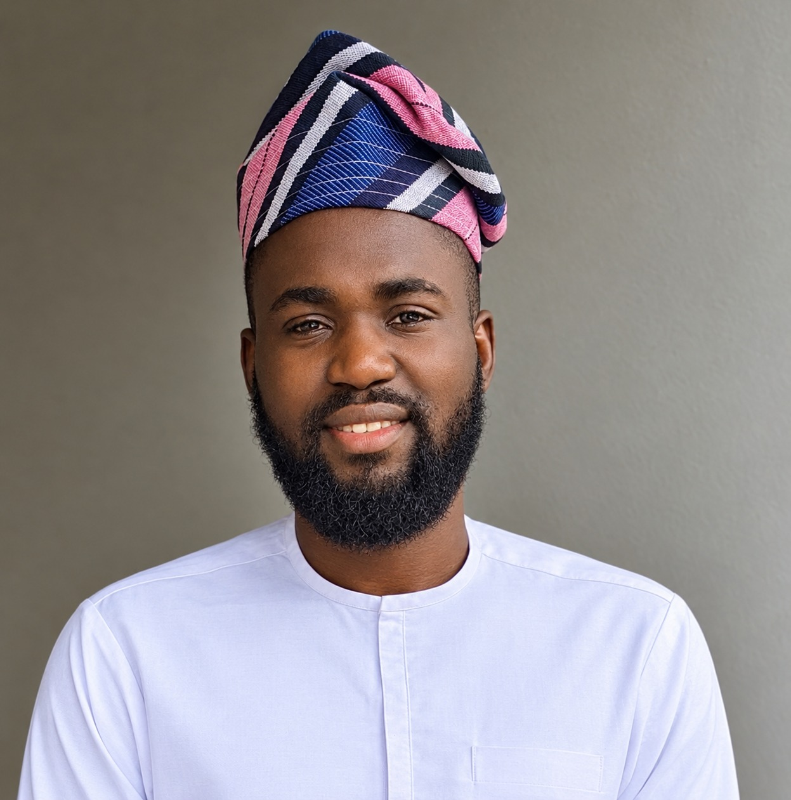

AI Data
Annotation, labeling, classification, validation and training-data preparation.
AI • DATA • MULTIMEDIA • QUALITY
I combine AI data expertise, multimedia production and rigorous quality practices to deliver accurate, reliable and usable digital outcomes.
Lagos, Nigeria • Available for remote opportunities

WHO I AM
Detail-oriented and results-driven Data Management, Data Annotation, Transcription and Quality Assurance professional with over five years of experience handling, organizing, reviewing and processing large volumes of data and digital content.
I bring together AI/ML data preparation, quality control, multimedia production and digital content expertise.
Read my full profile →CORE CAPABILITIES
Annotation, labeling, classification, validation and training-data preparation.
Data review, error identification, correction, consistency and quality control.
Transcription, audio review, segmentation and transcription QA.
Video, audio and image editing plus digital content management.
PROFESSIONAL APPROACH
“The goal is not simply to complete a task. The goal is to deliver something the next person can trust.”